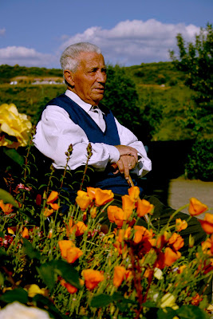

Segundo y Secundina
A mi Agüelina
Un par de caradas
y galletas con miel
a la hora de la merienda.
Hay jamón para quien no lo quiera
y caricias para todos,
tus rosinas encarnadas.
Decían tus manos que la vida es sufrimiento
pero yo te gritaba
que de suave que era la piel
se te quería echar a volar de los nudillos.
Geranios limoneros y malvarriales en el patio
“¡Llora, rosina, llora, que lo que lloras
no lo meas!”
Y yo que quería ser mayor,
y yo que me iba a morir.
Pero luego, a la hora de la merienda,
un par de caradas, abreboca,
y galletas con miel,
mi rosina encarnada.
Hay rostros que hablan
de infancias entre ovejas y vacas,
de increíbles mañanas heladas,
de sangre de la herida trillando el cereal.
Hay manos repletas,
repletas de lo que no hubo
recordando panes mohosos con cebolla,
dorsos brotados de soles de África.
Hay también miradas
que recuerdan largos caminos cien veces recorridos,
un runrrún de granadas y fusil
al lado de la cena
y carretas de sainete y entremés,
y canciones que ya nadie conoce
y cheiras, y bimbas y jostras...
… pero hay miradas, como la de mi abuelo,
que sonríen brillantes por guardar
un as en la manga.
Como la mirada de mi abuelo,
de mi abuelo Segundo.
Yo sé que las vidas, como las olas del mar,
vienen y van.
Sé que las almas, como a las velas de los barcos,
son los remolinos que las hinchan.
Remolinos que, antes o después,
se deshilachan de sus vientos
para volver al inmenso aire
al que siempre pertenecieron.
